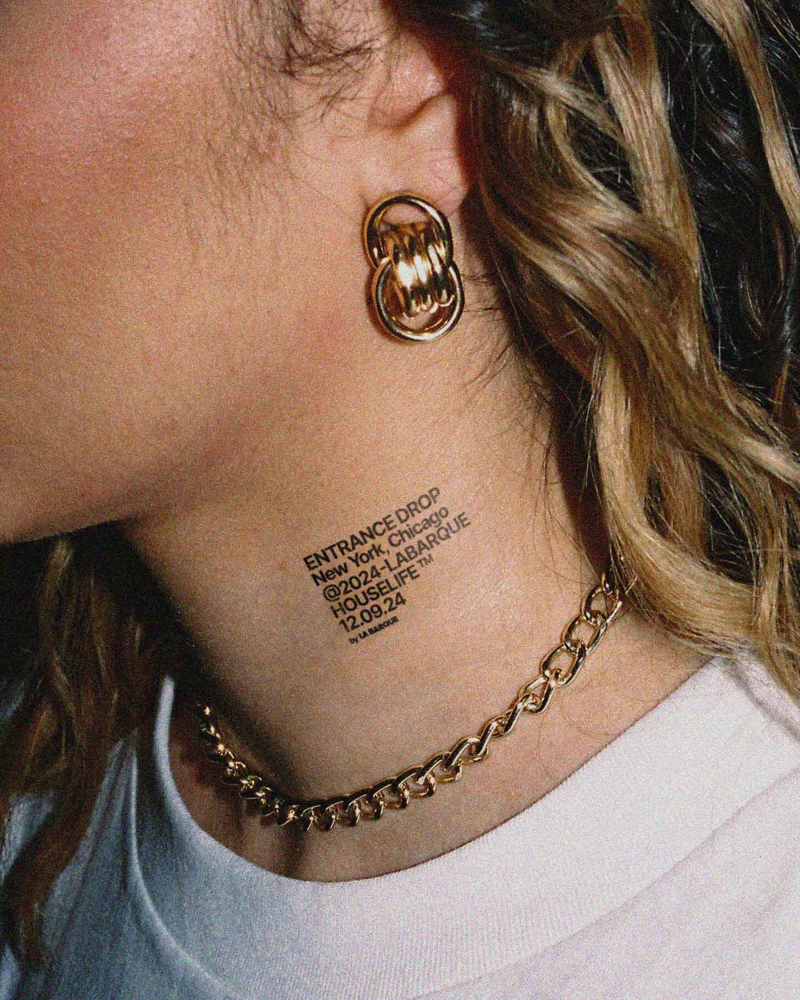

LA BARQUE — Visual Identity
La Barque est un lieu unique dédié à la house. Il propose un espace immersif accueillant aussi bien des DJ internationaux que des talents émergents. Avec une programmation soignée, il invite les amateurs de musique électronique à vivre des expériences sonores inoubliables dans une ambiance conviviale et festive. La Barque est devenue une destination incontournable pour les amateurs de beats envoûtants, célébrant la culture club dans toute sa diversité.
+
@chrisstussydj - @boilerroomtv - @leo_berne - @deephousebible - @rampa_keinemusik - @keinemusikcrue - @pawsaofficial